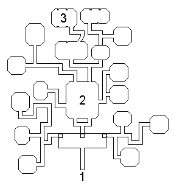

| Tomb of Ethric the Mad | |
| 1. | Entrance |
| 2. | This room is criss crossed by fire balls, but if you time it right you can run straight across. |
| 3. | The liche Ethric the Mad, you need his skull for Gabriel Cartman. |
This tomb is full of liche's and ghost's of all kinds. The coffins contain treasure. The Skull is a quest item. You will want some good magic protection in here.
Leave us a messagemgrounds@hotmail.com